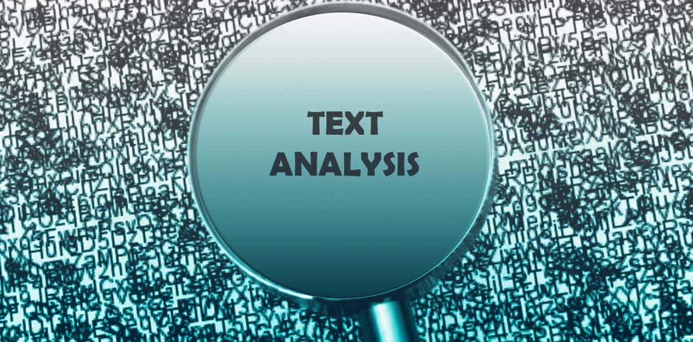
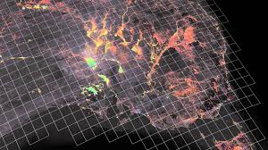
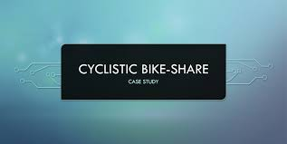
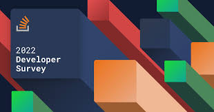
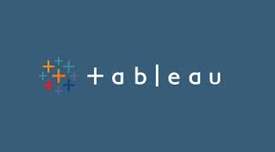
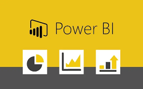

I turn raw data into decisions.
I build SQL and Python-based pipelines that process large-scale data, validate quality, and surface the patterns that machine learning models and business dashboards actually need. Currently at Mastercard, working across AWS, Azure, Snowflake, and Databricks.
Background
I hold a Master's in Data Analytics and Information Systems from Texas State University and a Bachelor's in Computer Science from JNTU Hyderabad. My work sits at the intersection of data engineering and analysis — I'm as comfortable tuning an ML cutoff framework as I am building the Airflow pipeline that feeds it.
Recent work spans data pipelines and analytics at Mastercard, financial ETL work at American Express, and academic analytics at Texas State University, with earlier experience building revenue and forecasting models at Cybage Software.
Skills
Projects
YouTube Text Data Analysis
Sentiment, word clouds, and engagement trends across comment data
Python · Pandas · Wordcloud

Explores YouTube comments using sentiment analysis, word clouds, emoji decoding, and engagement metrics like likes and comment counts, examining trends across content categories.
Python · Pandas · Matplotlib · Wordcloud View on GitHub →
Geospatial Analysis of Zomato Orders
Mapping delivery patterns and regional demand
Python · Geopandas · Folium

Investigates Zomato's order data to identify location-based preferences, popular delivery regions, and customer behavior, providing recommendations for optimizing delivery operations.
Python · Pandas · Geopandas · Matplotlib · Folium · Jupyter View on GitHub →
Stock Price Analysis using Time Series
Forecasting price behavior with ARIMA
Python · Statsmodels
Focuses on stock price data to understand trends using moving averages, stationarity tests, and ARIMA modeling, producing forecasts that support investment decision-making.
Python · Pandas · Matplotlib · Statsmodels View on GitHub →
Cyclistic Bike Share Analysis
Rider behavior and route optimization
Python · Pandas

Investigates usage patterns of a bike-share service, uncovering insights into ride durations, customer types, and popular routes to optimize operations and improve user satisfaction.
Python · Pandas · Matplotlib View on GitHub →
Stack Overflow Developer Survey
Developer trends and tooling preferences
SQL · IBM Cognos

Explores developer trends, preferences, and demographics using IBM Cognos for visualization, with SQL and Python handling data wrangling and preparation.
SQL · Python · IBM Cognos View on GitHub →
Product Distribution
Forecasting and supply chain simulation
Python
Applies predictive analytics, time series forecasting, and prescriptive simulation to optimize supply chain processes and distribution strategy.
Python View on GitHub →
Heart Failure Prediction
Large-scale ML for early risk detection
PySpark
Uses PySpark to develop machine learning models predicting heart failure risk, with robust data preparation and feature engineering supporting early detection strategies.
PySpark View on GitHub →
Tableau Dashboards
Interactive visualizations across multiple domains
Tableau

A collection of dynamic dashboards designed for data exploration and storytelling, published to Tableau Public.
Tableau View Tableau Public →
Power BI Dashboards
Data models and reports for business decisions
Power BI

Visually compelling, interactive reports built on advanced data modeling to deliver clear, actionable insight for stakeholders.
Power BI View Power BI →Experience
Data Analyst
- Built SQL/Python data pipelines to process transaction data, validate quality, and surface fraud patterns for ML models in an Agile/Scrum environment.
- Tuned tiered cutoff frameworks for fraud ML models (XGBoost, Decision Trees), cutting fraudulent chargebacks 22% and improving detection accuracy 15% via 50+ predictive features.
- Designed and ran online A/B experiments on fraud alert thresholds to measure conversion/fraud impact and drive pipeline strategy updates.
- Owned end-to-end SQL/Python data workflow, defined KPIs, enforced data governance, and built Tableau dashboards for stakeholder reporting.
- Maintained fraud datasets in AWS Redshift and Snowflake, contributing to data warehouse design and data modeling for loss-forecasting analysis.
- Applied NLP (SpaCy) for anomaly detection and used Claude Code to debug and validate pipeline scripts, reducing manual review effort.
Data Analyst Intern
- Developed ETL workflows for financial data processing in SQL and Snowflake, improving data integrity by 30%.
- Designed and deployed financial dashboards in Tableau, boosting operational efficiency and tracking revenue growth.
- Conducted data-driven risk analysis and predictive modeling to support financial investment decisions.
Research Analyst
- Designed Power BI dashboards to track academic KPIs, improving graduation rates by 15%.
- Developed predictive models in Python and SQL to forecast student success and retention.
- Improved student GPA 23% and retention 25% through analysis of performance and attrition factors.
Graduate Assistant
- Built Excel pivot-table dashboards tracking 5,000+ logs, cutting response times by 15%.
- Created Power BI dashboards using Power Query for ETL, driving insights behind 13 new academic programs.
- Built Power Apps and automated approvals/notifications via Power Automate across SharePoint and Teams, cutting manual effort 30%.
Data Analyst
- Translated stakeholder business needs into data-driven pipeline requirements, ensuring measurable ROI.
- Optimized ETL workflows using Python, Azure Data Factory, and Airflow, improving efficiency by 30%.
- Scheduled and monitored batch pipelines via Airflow DAGs in an Agile delivery model for reliable data ingestion.
- Transformed booking/revenue datasets with PySpark in Databricks, structuring Delta Lake tables for analytics architecture.
- Built Tableau dashboards and revenue models, generating $200K+ in revenue and cutting chargeback costs 5%.
- Developed predictive/forecasting models (KNN, regression) in Databricks for revenue and customer analytics.
Education
Master of Science, Data Analytics and Information Systems
Bachelor of Technology, Computer Science
Certifications
- Tableau Desktop Specialist
- Google Data Analytics Professional Certificate
- IBM Data Analyst Professional Certificate
- ServiceNow Certified System Administrator
- Claude Code in Action
- Building Customized LLMs with OpenAI
Let's talk about data.
Open to data analyst and analytics engineering roles. Reach out directly, or find me on the platforms below.